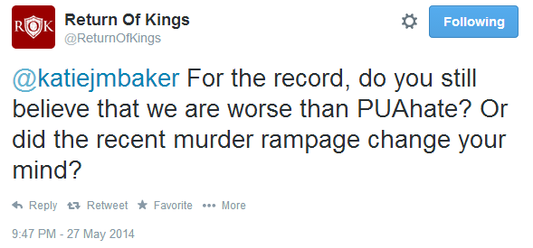
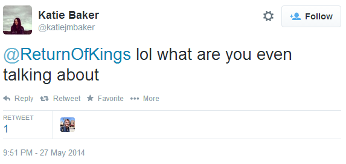

Daryush "Roosh" Valizadeh created ROK in October 2012. You can visit his blog at RooshV.com or follow him on Twitter and Facebook.


Since originally publishing an article describing how a male-friendly culture encouraging Elliot into self-improvement (game), legal prostitution, and foreign marriage with Southeast Asian women would have prevented his murderous rampage, I did something that most people won’t bother to do: I read his manifesto. Not even halfway through, I began to understand exactly why the media has been pushing the narrative that PUA (game) may have been the cause: Rodger was one of their own.
Here is the PDF of his manifesto. If you take the time to read it, you will likely come to the same conclusion I have that Elliot Rodger is in fact a feminist. In other words, the killings of six individuals stem in part because of his mainstream feminist beliefs that, after intersecting with his dark traits of narcissism, entitlement, loserdom, and hopelessness, led him to kill. The fantastical mainstream media articles you have come across trying to pin Rodger upon us is nothing more than a defensive measure to distance themselves from a killer that was a card-carrying member of their own progressive club.
Here are ten ways in which Rodger and feminists have an overlapping view of the world:
Feminist theory speaks a whole lot about equality, but it’s actually an ideology that seeks to absolve all women from their amusing but sometimes dangerous stream of mistakes. Feminism (and progressivism in general—they might as well be interchangeable terms) treat women as flawless snowflakes that must be coddled and spoon-fed happiness and validation. Any act by a woman, even if it results in failure or bodily harm (like an abortion), is an “empowering” statement of independence and strength, while any failure by men is seen upon as proof that they are out-of-touch doofuses, a fact that is readily displayed on television, movies, and advertising.
Rodger’s manifesto exactly matches this feminist belief. He shows little genuine hate towards the object of his affections—women—and their poor choices, instead lashing out against the men who were successful with those women. Feminists do the same, always ready to blame men for their failures in life, even going so far as saying that society would be better without men, who are mocked as mere “sperm donors.” In spite of the bad choices that women make by dating bad boys at the schools he attended, Rodger gave them a pussy pass and continued to believe that they were flawless angels who should be cherished, especially the blonde ones.
Rodger’s hate for those men isn’t much different than that hate displayed to me and my colleagues here at ROK. Just take a look at this supposedly professional woman having an embarrassing emotional meltdown on a news show because she didn’t agree with what I said, resorting to blatant distortion and lies about “rape culture” and other such nonsense that was unrelated to the piece she was critiquing:
Elevating women as the superior sex, which is what both feminists and Rodger have done, means that discrimination and outright hatred must be then applied to the “inferior” sex—men. It’s no surprise that the most violent killings performed by Rodger were on his three male roommates with a knife, who surely endured more suffering and pain than the cleaner executions he did on his female victims.
We have an often-used metaphor called the “red pill,” which stands for the pursuit of truth concerning human nature, no matter how painful those truths can be. The opposite of the red pill is the blue pill, of people who choose to be placated by lies describing reality. Both feminists and Rodger were firm adherents to the blue pill world—of believing in a way of nature that doesn’t actually reflect actual human behavior. For example:
As final proof that Rodger was as blue pill as you can get, simply reverse all the gender references within his manifesto and pretend it was written by a woman. What you would then have before you is a pity party of a self-absorbed feminist who thinks that men are the cause of all her problems. If he lived a couple more years, I have no doubt that Rodger would even be a proud moderator of the Blue Pill subreddit.
In spite of all the loneliness and pain that Rodger went through, he still couldn’t be bothered to lift one finger to improve his station. Compare that to what we teach here at ROK, where we strongly advise you to start your game training with at least 100 approaches, with the expectation that you’ll probably have to do thousands during your lifetime. In Rodger’s manifesto, all 140 pages of it, he details only saying “Hi” to one girl and practically running away from fear. In other words, he did one aborted approach with zero follow-up. That’s not game anywhere in the game universe, and if he came to us saying that he has yet to get laid after putting such an half-assed attempt, we’d tell him to do 10 solid approaches the following day and stop whining like an entitled child.
The fact that Rodger was a member of PUAHate, an online community of social retards who despised game and believed only Brad Pitt and millionaires can get laid, further highlights how vehemently anti-game he was. Why wasn’t he open to improving himself? Why wasn’t he ready to expend the labor to make himself more attractive to women? For that answer, we might as well ask some feminists, who share the exact same belief as him in not having to lift a finger in making yourself more attractive to the opposite sex. Look no further than feminist’s cause-du-jour, fat acceptance, a culture of de-improvement—and frankly, de-evolution—where women gain massive amounts of weight and then flaunt their blubber on social media, ready to attack any man who dare finds their display to be unattractive or repulsive.
Fat acceptance has become so pervasive that we had to dedicate one whole week on ROK tearing it to shreds, but in spite of that, not much has changed. America continues to get fatter and feminists continue to attempt to normalize obesity as actually being beautiful, just like how Rodger tried to convince himself of the idea that having a BMW would be attractive to women.
Take a look at this quote by Rodger:
Everyone treated me like I was invisible. No one reached out to me, no one knew I existed. I was a ghost.
Does that ring a bell to you? It’s almost identical to the rant we recently witnessed on the Louis CK show when a morbidly obese female went on to whine and bitch about how being a fat ass is not getting her the man she wants. It’s no surprise that fatties rushed to praise Louis CK for his act of sedition against men and acceptable standards of beauty. There is almost no difference between Rodger and a modern American woman who subscribes to feminist thought.
Now take a look at this passage:
All of the hot, beautiful girls walked around with obnoxious, tough jock-type men who partied all the time and acted crazy. They should be going for intelligent gentlemen such as myself. Women are sexually attracted to the wrong type of man.
Let’s do a swap on the genders:
All the handsome men walked around with blonde bimbos who don’t have a good career like me and knowledge of reality television shows. These men should be going for a strong, empowered, independent, fabulous woman such as myself. Men are sexually attracted to the wrong type of woman.
The overlap in mindset would be comical if it didn’t result in tragedy.
Another question worth asking is this: when today’s American woman can’t find the man of her dreams, does she look in the mirror and blame herself? No, she blames men for not finding her unattractiveness attractive. This is actively promoted by feminist thinkers on the most widely read American blogs like Buzzfeed, Gawker, and Huffington Post. Rodger shared this same viewpoint. His manifesto is dripping with entitlement of why girls don’t find him to be “marvelous” just because he happens to own a fancy pair of sunglasses. Feminists and Rodger, it turns out, are like two peas in a pod.
Please don’t forward us another listicle on a feminist-friendly blog about how men need to be nice, friendly, and awkwardly consensual by applying legalese speak in the bedroom before passionate fornication. Rodger believed much of the same, thinking that you had to be a “supreme gentleman” that catered to the material and emotional whims of women, doing everything possible to please them in exchange for a sexual reward. We can only imagine how nauseatingly “gentlemanly” he would have been if he actually managed to land a date on his terms.
I have no doubt he would have agreed with just about all the mainstream bullshit advice on being a gentleman, particularly the Thought Catalog piece The 20 Rules Of Being A Modern Gentleman. There is also a Buzzfeed quiz titled How Much Of A Gentleman Are You? that Rodger would have gotten an A+ on. The end result of his loneliness (killing six people) was obviously not gentlemanly, but before that rampage he treated girls with a gentlemanly shyness, reverence, and respect that feminists would have applauded him for. Rodger and feminists believed in the exact same demeanor that men should have around women.
No one hates game more than feminists, who have gone so far as to equate it rape ([1], [2], [3]). They absolutely despise any attempt by men to improve their value in the sexual marketplace because then that would mean fewer men to put up with their obesity, short hair, or bad attitude. Rodger believed the same, going so far as becoming an active member in the PUAHate community which dedicated the bulk of their efforts to criticizing game and its adherents like a woman’s gossip circle. (On PUAhate there had been over 100 threads criticizing me and other ROK staff.)
Would you be surprised if I were to tell you right now that Rodger and a mainstream feminist shared the same views on PUAHate and game? I hope not, because that’s exactly what I found. A popular feminist writer who has worked for Newsweek, Jezebel, Buzzfeed, and Dissident magazine, Katie JM Baker, publicly declared that PUAs (i.e. us) are actually worse than PUA Hate.
The men that lurk in the PuaHate forums are almost worse than the PUAs themselves…
Let that soak in for a second. Feminist rage is so deep and emotional against game that they have supported a forum with “hate” in the title that cultivated and gave comfort to a mass murderer. I gave Baker a chance to change her opinion about believing a forum of hate was less worse than men who practice game:

She responded with childish text-speak

A feminist refused to reverse her position that game practitioners are not worse than Rodger’s favorite hangout. That tells me that Rodger and Baker would get along very well in their hate for men like us who teach game and try to improve men’s lives.
This is a minor point but one worth mentioning. We don’t know how knee-deep he was into The Young Turks liberal positions, but it’s a fact that he was not a subscriber to my channel or forum. We can only speculate as to how much TYT molded his pro-feminist view.
Whenever a feminist encounters these parts, she immediately bashes our alpha/beta concept of male sexual hierarchy. She instead spouts tired cliches that are supposed to help men in their pursuit of sexual happiness but which actually do nothing of the sort:
Of course these phrases don’t explain human mating behavior and why some men get way more women than others, but that’s no matter since feminist theory does not have the slightest intention to explain the world in an accurate or truthful manner.
Like feminists, Rodger despised alpha males, who he called “obnoxious.” Here’s some relevant quotes from his manifesto:
I noticed that there were two groups of cool, popular kids. There were the skateboarder kids, such as Vinny Maggio, Ashton Moio, Darrel, Wes, and Alex Dib. And then there were the boys who were popular with girls, including Vincent, Robert Morgan, and [redacted]. They all seemed so confident and aggressive. I felt so intimidated by them, and I hated them for it. I hated them so much, but I had to increase my standing with them. I wanted to be friends with them.
[…]
I thought all of the cool kids were obnoxious jerks, but I tried as best as I could to hide my disgust and appear “cool” to them. They were obnoxious jerks, and yet somehow it was these boys who all of the girls flocked to.
If Rodger was alive right now, he’d be giving feminists high fives for sharing the exact same viewpoint on sexually superior but “horrible” males who have figured out the dating game and what women actually want.
Rodger might as well have been a woman, which has raised speculation if he was actually gay. He took selfies like women. He was addicted to Facebook like women. He was obsessed with his appearance. He was narcissistic, vain, and materialistic. I wouldn’t be surprised if he was also addicted to his iPhone like your standard issue American woman. Heartiste does a good job of highlighting the similarities:
[The effeminate male, like Rodger, is an] indictment of this infantile Millennial generation, which daily provides evidence that their ranks are filled with effeminate males who, like women, expect the world to cater their needs, no questions asked, no demands made. Elliot Rodger couldn’t stand how unfaaaair girls were to date uglier men than himself, how unfair life was that his car and clothes weren’t a magnet for hot white sorority chicks, how unfair the cosmic laws were to require of him a little bit of effort if he wanted to put an end to his virginity.
Egotistic, attention starved, solipsistic, passive aggressive, perpetually aggrieved, and unwilling to change when posing as a martyr feels so damn good… there’s your new American manlet, same as your new American woman.
Like I already mentioned, a quick find/replace gender swap on his manifesto will pass the Turing test in convincing most spectators that he was actually a 22-year-old empowered feminist who participates in “Take Back The Night” walks and thinks that posting mindless #YesAllWomen tweets on Twitter comprises her good deed of the month. Rodger was effeminate and a negative person overall simply because he possessed beliefs that are undoubtedly shared by feminists.
He had a victim complex of being held down by invisible forces outside of his control. Feminists also believe that the “patriarchy” is holding them down, and they flock to Tumblr to reblog facile images and memes to spread lies that men make more than women for the same work, for example. These Tumblr crusades have even led to my own family being prank called at late hours, all because my words hurt their feelings, just like Rodger’s was hurt that pretty girls didn’t find him automatically attractive.
It turns out that Rodger was a budding social justice warrior, perhaps not far from establishing his own Tumblr beachhead:
I formed an ideology in my head of how the world should work. I was fueled both by my desire to destroy all of the injustices of the world, and to exact revenge on everyone I envy and hate. I decided that my destiny in life is to rise to power so I can impose my ideology on the world and set everything right. I was only seventeen, I have plenty of time. I thought to myself. I spent all of my time studying in my room, reading books about history, politics, and sociology, trying to learn as much as I can.
[…]
I seriously started to consider working towards writing an epic story. I was always creating stories in my mind to fuel my fantasies. Usually those stories depicted someone like myself rising to power after a life of being treated unfairly by the world.
[…]
To be angry about the injustices one faces is a sign of strength. It is a sign that one has the will to fight back against those injustices, rather than bowing down and accepting it as fate. Both my friends James and Philip seem to be the weak, accepting type; whereas I am the fighter. I will never stand to be insulted, and I will eventually have my revenge against all those who insult me, no matter how long it takes.
Both Rodger and feminists feel the only way to get what they want out of life is not self-improvement, but attacking others they disagree with. Their shared ideology is one of destruction. We have to wonder if Rodger would have eventually participated in any feminist event like SlutWalks to right the world of fantasy injustices that prevent them from being seen as beautiful, marvelous, gentlemanly, and so on.
If you see a feminist in the wild, a white knight won’t be far. He’s the man who enables her false view of the world and provides her with good feels and encouragement for her social justice campaigns. While Rodger wasn’t quite a white knight in this sense, he nailed all three white knight components:
1. He is the ever-present servant.
2. He pines silently for a single woman.
3. That woman wants little to do with him, and it shows.
In other words, if you inserted him in feminist company, he would be the glove to their chubby bear claw fingers. His personality is wholly compatible with how feminists believe men should behave: servile and wimpy while never taking real action on their sexual desires.
The only things in common that Rodger had with us is that (1) he wanted sex with attractive women, and (2) he had a functional penis. That’s it. The overlap of thought and belief between Rodger and feminists, however, should convince you beyond a reasonable doubt that Rodger was in fact a feminist, even if he didn’t himself know that his peg fit snugly into the feminist hole. I’ve actually met self-described feminists who were less feminist than Rodger was.
While I stand by my argument that game would have helped Rodger, I am beginning to wonder if being a feminist was the seed that drove him to desperation and delusion, eventually leading to a tragic loss of life. This line of thought is worth pursuing by people who want to understand why a man felt that taking other lives and his own was seen as the best solution. You definitely won’t read about this conclusion in the media, which is too busy trying to toss Rodger to our side like a hot piece of coal, even though Rodger shares absolutely no similarity in thought and behavior to game practitioners.
I have logically come to the conclusion that Rodger was in fact the first male feminist mass murderer that we have seen in America. I’m afraid that if the feminist ideology contained within Rodger’s head is allowed to continue spreading, we are likely to see more violent acts by men who believe in the exact same things that feminists do.
Don’t Miss: No One Would Have Died If PUAHate Killer Elliot Rodger Learned Game